Documentary Filmmaker & Journalist
—01
Film
—02
Photography
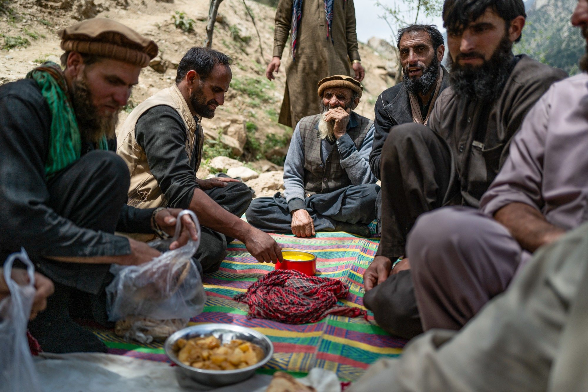
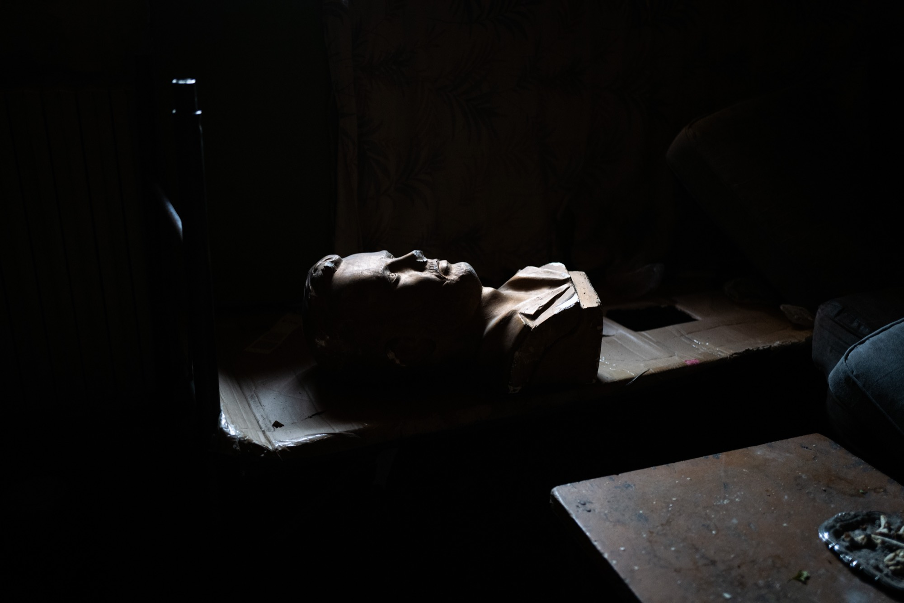
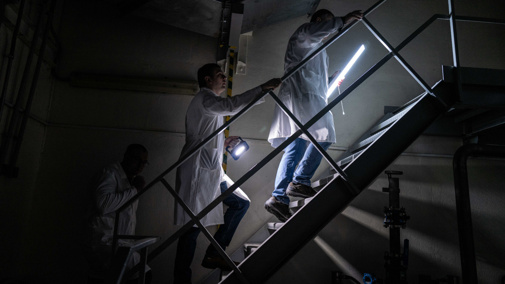
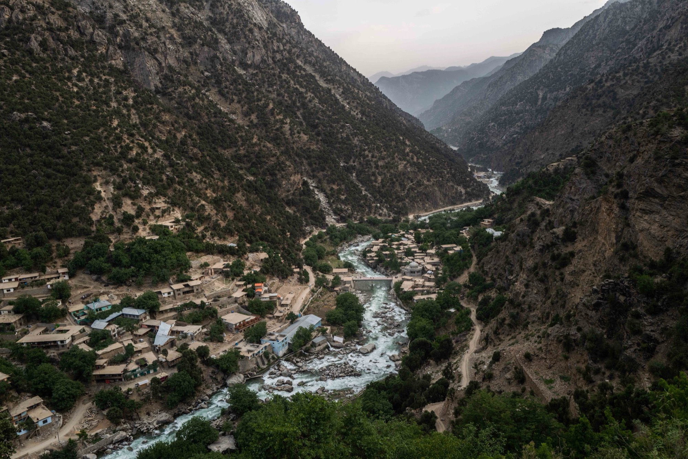
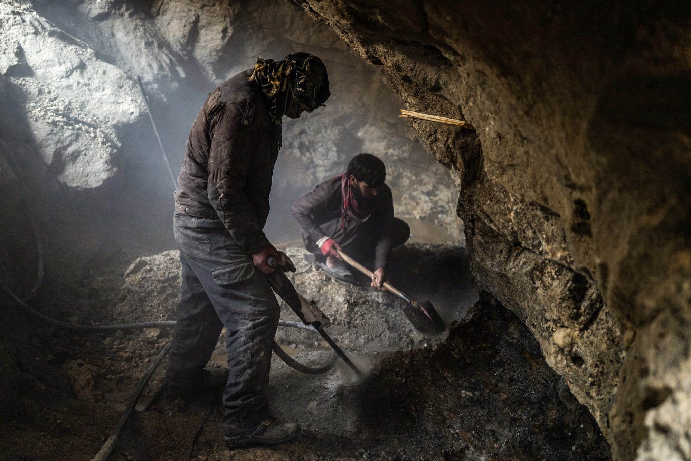
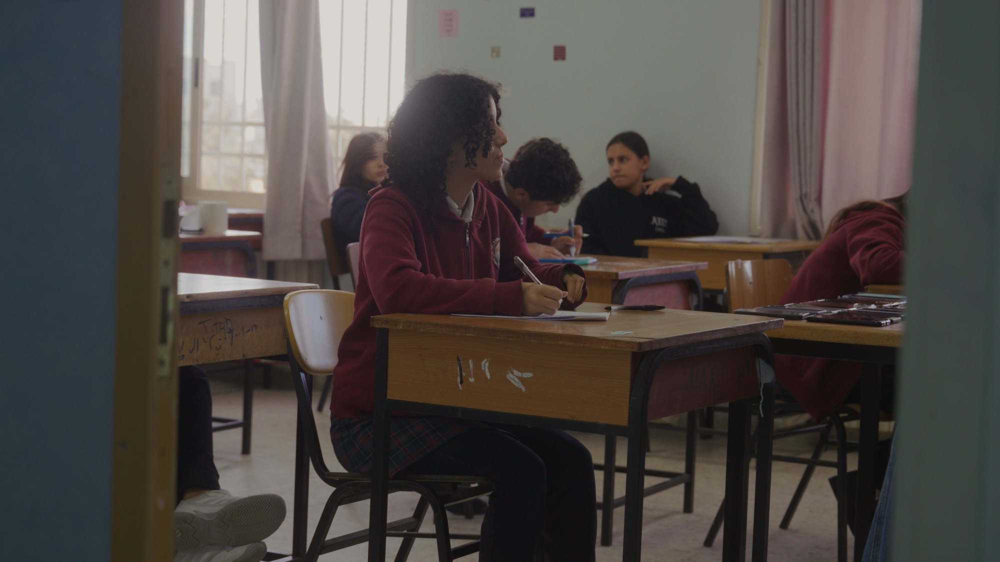
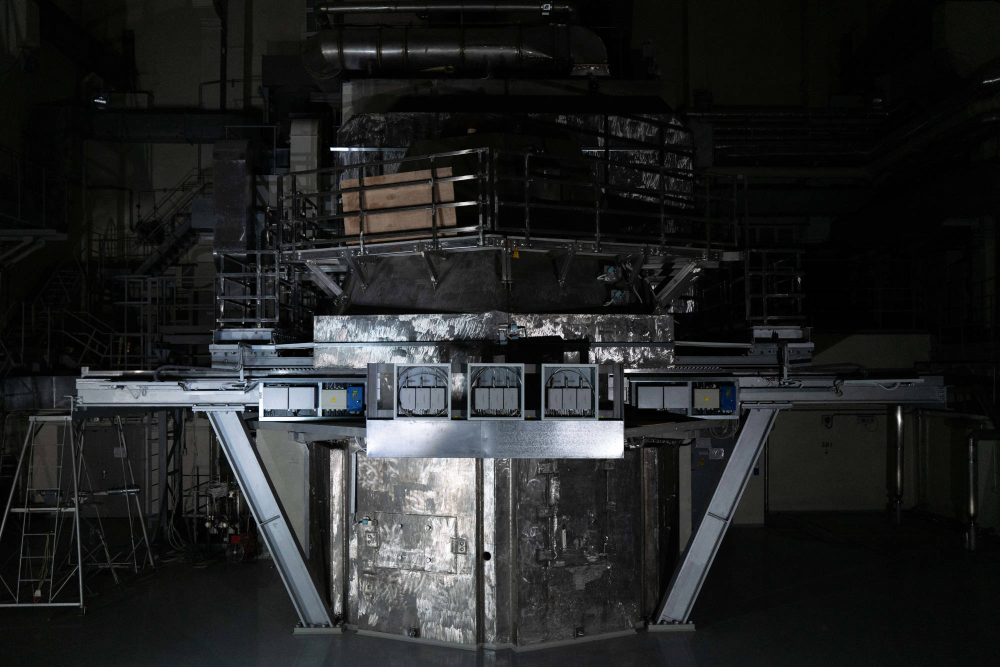
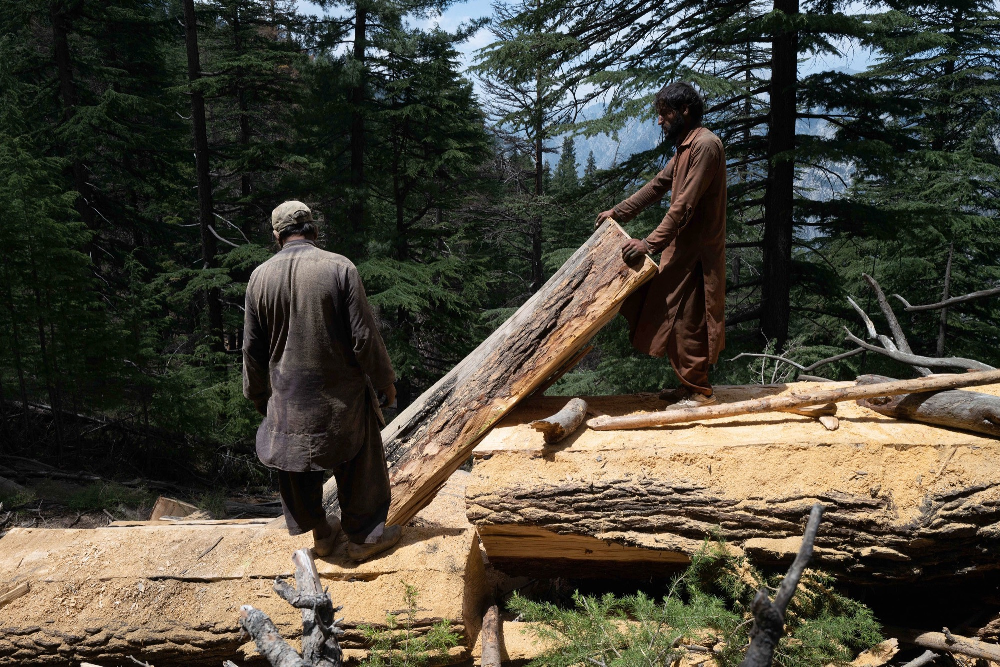
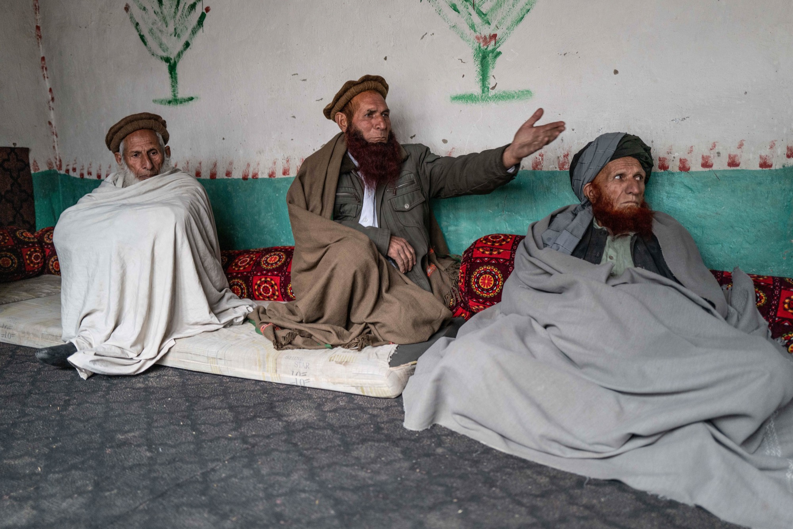
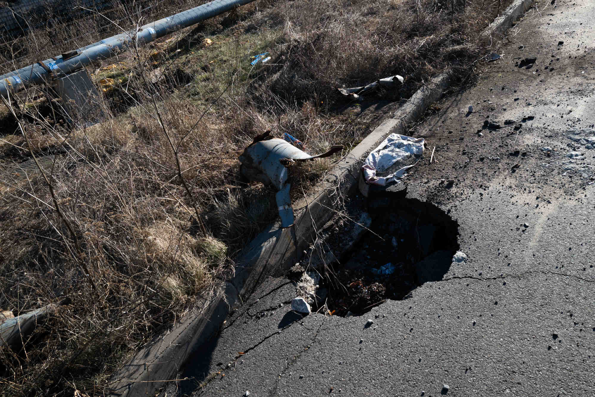
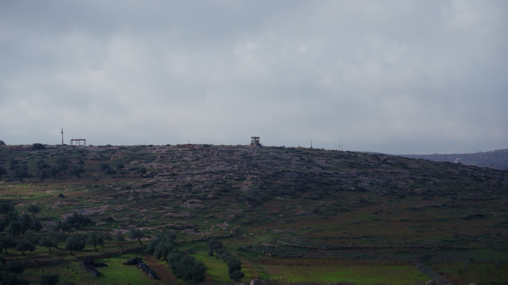
—03
Writing
—04
About
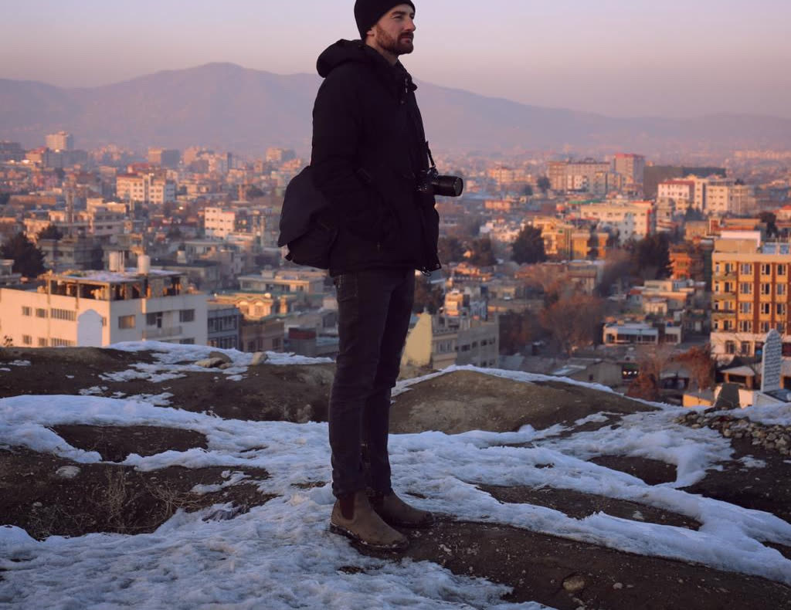
I'm a documentary filmmaker, photojournalist, and humanitarian analyst with over a decade of field experience covering conflict, displacement, and human rights crises across Afghanistan, Ukraine, Palestine, Lebanon, Iraq, Syria, Yemen, and Europe.
My work has been published and broadcast by Al Jazeera, Scientific American, DW Documentary, Foreign Policy, Undark, The New Humanitarian, and others. I'm also a Pulitzer Center Crisis Reporting grant recipient.
Beyond filmmaking, I work as a conflict analyst and humanitarian adviser — with roles at multiple INGOs — bringing an analytical depth to my storytelling that goes beyond the image.
I operate across the full production pipeline: scripting, solo field production, sound, editing, colour grading, motion graphics, and multilingual delivery. I've worked in numerous conflict zones, and have HEFAT training with full PPE.